Reverse Engineering the Arctis 9 & learning Go along the way
To improve my working conditions (cough and get a cleaner battlestation cough) I bought a wireless headset from SteeSeries, the Arctis 9.
And you can't have wireless without battery, having to charge the device, etc. Even if this model allows us to use it while charging, it's still unpleasant to have to take it off, wire it, in the middle of a conversation or a meeting. Even more to be locked to your computer when you need to be able to move around.
Natively, we only have 2 ways to get the headset's battery level:
- A LED, under the ear
Put a mirror under your desk or forget about it.
- An icon in the proprietary app, SteelSeries Engine 3
This is where it all started. The manufacturer software show us the headset's battery in a pictogram form, with only 4 levels.
This first problem is obviously the lack of precision, 49% or 26% isn't the same thing, but using this kind of scale make it like it is.
Then come the biggest problem for me, to get this information we need to reach for it. Thought about it, then open the app and check it. I hate that. I don't want to have to open a special app to check the battery level of my stuffs.
One of my android phone's feature I really like is the icon showing the battery level of my bluetooth headset.
You can see where it was going, a new obsession was born.
Headset's Reverse Engineering
My favorite part ! Let's start with a general environment presentation:
- Windows host
- 2.4GHZ USB receptor communicating with the headset
- VID:PID
0x1038:0x12c2&0x12c4
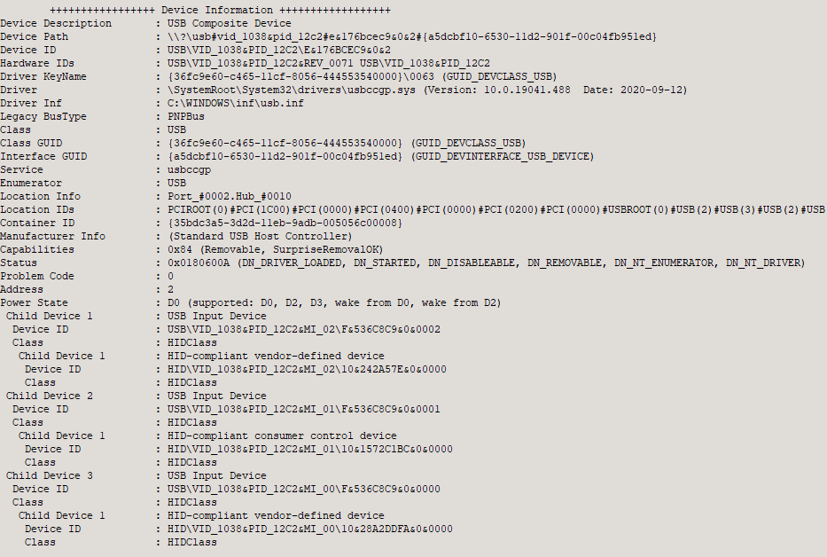
We are going to focus on 0x12c2, the 2nd being, the headset itself, it doesn't interest us, we need the data transiting between it and the dongle.
Why ? Because, by design, it seems logic that it is the dongle receiving this information. If your computer know the model and connecting state of the headset while never being connected to it before, we can deduce this information came from the dongle.
I didn't spend too much time on the proprietary software, after minimal testing on Windows's side (system API & sysinternal) I didn't found anything interesting, so I decided to switch my focus on USB communications.
For this task we call our brother in arms, wireshark. With its plugin, USBPcap, we are able to inspect USB bus packets.
USB architecture
Ok, for the next part of the show we need to refresh our memory about the USB architecture. (Thanks to BeyondLogic)
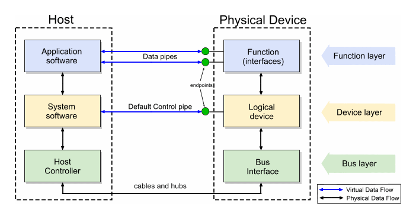
Host talk with devices via endpoints.
A standard request between host and endpoint look like this:
bmRequestType
- Determine the direction of the request: host to device / device to host
- Determine the type of packet being made: standard / class / vendor
- Determine the designated recipient: device / interface / endpoint / other
bRequest
- Determine the request made
wIndex
- Interface number
wValue
- Additional parameter.
wLength
- The number of bytes to be transferred is there is a data phase
Data
- Additional data depending on device/software.
Now that it is clearer (or at least less misty), we can continue !
Let's have fun
To be sure to focus on interesting data we start by listening communications without the software closed and headset off. Then we start them up.
Once it's done we get tons of packets to analyze.
In the firsts exchanges the host ask the different devices to return theirs descriptions.(data we have seen earlier in USB Tree View)
By filtering packets on SteelSeries's VID 4152 (equivalent to 0x1038) we retrieve theirs devices addresses.
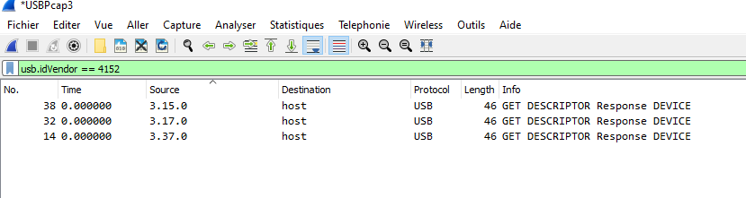
Lucky me, I only own one headset from them, making the cleaning faster. By inspecting the different packets we get this information:
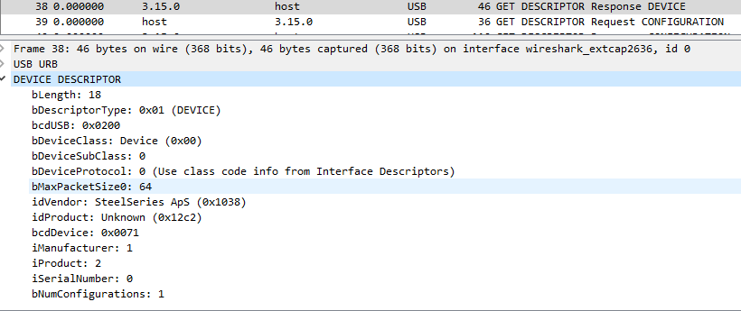
We can observe, in the returned description returned by the device that our target 0x12c2 is located in 3.15.0
We can refine our search and ignore packet not having this device as source nor destination.
Under a lot of noisy packets, one kind seems particularly interesting: SET_REPORT
Contrary too other ones, they have a Data field, this one send the 0x20 value:
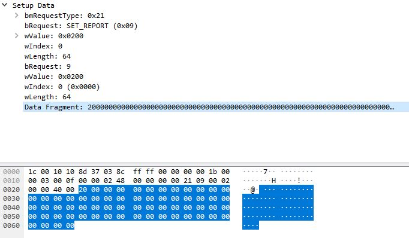
Then we receive a response from 3.15.0, which isn't interesting, then another from 3.15.1:
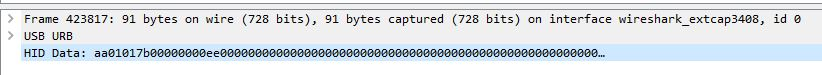
This one trigger my spider-sens, the HID DATA field contains weird data from the device. It seems worth to dig on this one.
Fast forward
I spare you from the hours spend to analyze the different packets as well as the research of methods to craft HID requests under Windows without getting out of paracetamol.
To note:
- Even if I wasn't doubting, my love for development under *nix is confirmed.
- Sending packet blindly can be dangerous, during my tests I've KOed and disrupted the headset many times. Good news is, restarting SteelSeries Engine just repushed the settings and reset whatever change I've wrongly made.
- For my first POC I've used hidapi lib which provide a good starting point.
POC
Thanks to the example files and documentation I was able to have some fun, this is what my POC looks like:
#include <stdio.h>
#include <wchar.h>
#include <string.h>
#include <stdlib.h>
#include "hidapi.h"
#ifdef _WIN32
#include <windows.h>
#else
#include <unistd.h>
#endif
int main(int argc, char* argv[])
{
(void)argc;
(void)argv;
int res;
unsigned char buf[256];
#define MAX_STR 255
wchar_t wstr[MAX_STR];
hid_device *handle;
int i;
struct hid_device_info *devs, *cur_dev;
printf("Compiled with hidapi version %s, runtime version %s.\n", HID_API_VERSION_STR, hid_version_str());
if (hid_version()->major == HID_API_VERSION_MAJOR && hid_version()->minor == HID_API_VERSION_MINOR && hid_version()->patch == HID_API_VERSION_PATCH) {
printf("Compile-time version matches runtime version of hidapi.\n\n");
}
else {
printf("Compile-time version is different than runtime version of hidapi.\n]n");
}
if (hid_init())
return -1;
// Set up the command buffer.
memset(buf,0x00,sizeof(buf));
buf[0] = 0x01;
buf[1] = 0x81;
// Open the device using the VID, PID
handle = hid_open(0x1038, 0x12c2, NULL);
if (!handle) {
printf("unable to open device\n");
return 1;
}
// Read the Product String
wstr[0] = 0x0000;
res = hid_get_product_string(handle, wstr, MAX_STR);
if (res < 0)
printf("Unable to read product string\n");
printf("Product found: %ls\n", wstr);
// Set the hid_read() function to be non-blocking.
hid_set_nonblocking(handle, 1);
buf[0] = 0x0;
buf[1] = 0x20;
hid_write(handle, buf, 65);
if (res < 0)
printf("Unable to write() (2)\n");
// Read requested state.
res = 0;
while (res == 0) {
res = hid_read(handle, buf, sizeof(buf));
if (res == 0)
printf("waiting...\n");
if (res < 0)
printf("Unable to read()\n");
#ifdef WIN32
Sleep(500);
#else
usleep(500*1000);
#endif
}
printf("\nData read:\n ");
// Print out the returned buffer.
for (i = 0; i < res; i++)
printf("%02hhx ", buf[i]);
printf("\n\n");
hid_close(handle);
hid_exit();
#ifdef WIN32
system("pause");
#endif
return 0;
}
It makes us able to replay the SET_REPORT REQUEST send to 3.15.0 seen earlier. Then return the response to our terminal. We can now ditch Wireshark and play with the request.
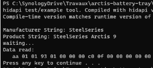
Playing with Golang
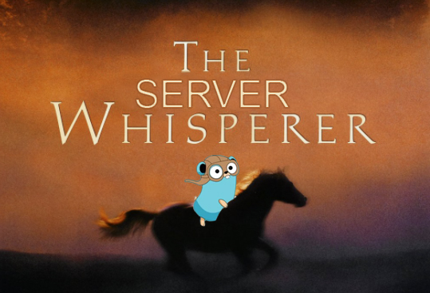
As a SysAdmin/SRE/whateverOPS/Technomancer/Server Whisperer, I wanted to start learning the Go language, nice opportunity we have here !
HID Library
After testing a lot of Go project wrapping around HID libraries, I was clueless, every one of them got problems that make me unable to use them. Missing function, Windows compiling not working or not able to work with HID on non *NIX systems...
I finally decided to fork the one I was having the fewer problems on. This was karalabe's one. The only problem I was having was, when calling a function under windows, made the number of bytes written off by 1 by prepending the HID report ID, solved with a 4 lines commits. The fork is available on GitHub.
Tests
To recreate the original POC we need to:
- Open the endpoint
- Create a buffer containing our request
- Write it to the endpoint
- Read the response
It looks like this:
package main
import (
"fmt"
"math"
"github.com/qsypoq/hid"
)
var (
vid uint = 4152
pid uint = 4802
)
func open_headset() []byte {
buf := make([]byte, 9)
buf[0] = 0x0
buf[1] = 0x20
devices := hid.Enumerate(uint16(vid), uint16(pid))
if len(devices) > 2 {
headset_info := devices[2]
headset, err := headset_info.Open()
if err != nil {
fmt.Println(err)
}
defer headset.Close()
_, err = headset.Write(buf)
if err != nil {
fmt.Printf("Write fail: %v", err)
}
_, err = headset.Read(buf)
if err != nil {
fmt.Printf("Read fail: %v", err)
}
}
return buf
}
So, now that we are able to replay and play with the request, we need to know what the information returned means, how it can be interpreted.
We need to test a certain number of situations, retrieves data, and make correlations out of it.
This is the different situations I tested, with data retrieval for each.
- Shutdown the headset
- Power it on
- Let it charge
- Let it discharge
Observations & interpretations
Once all the tests made, we can conclude:
When the headset is on the value of the 2nd byte is 1
When the headset is off the value of the 2nd byte is 3
When the headset is charging:
- 4th byte value increase with time
- 5th byte is fixed at
1
When the headset isn't charging:
- 4th byte value decrease with time
- 5th byte is fixed at
0
So we can now conclude many things here :
- The 2nd byte is the power state,
0when turned off,1when on. - The 4th return the battery level.
- The 5th is the charging state,
1when charging, else0.
So, next problem we are facing here: if the 4th byte returned is the battery level, how can we interpret it ?
To understand, and at least try to understand it, I let the headset charge a whole day and night, making sure it was at max charge. Then I opened the SteelEngine app and monitored the returned value from the request matching each battery level logo.
Timing wasn't 100% on point because the software was open on another screen, and I was working on other things at the same time. We can expect a tiny difference between registered values and real values hard-coded in SteelSeries Engine.
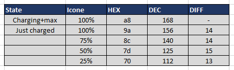
To note: When charging, the returned battery value is greater than reality, when we take off the charging cable we can see a significant drop of around 21.
Now having some values for major battery steps, we can do some rule of 3 magic, if 25% = 112 & 50% = 125 then 35% should be around 117.
With this method I recreated an approximate scale, by following our statement we can imagine 0% being ~100 in decimal value. This is what it looks like:
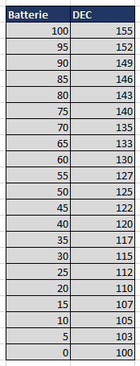
Tray icon
OK, now that we are able to get and interprate values returned by our headset the last step is to create a systray app that return us this information visually.
This is the different states we want to have:
- Disconnected
- In charge
- In use: battery level
Start simple
So where do we start ? Well, having a basic systray icon working is a good first step. For this I used getlantern's systray library.
Keep in mind I'm POCing under windows, so the features used will only be the ones compatibles with it.
Basic systray icon:
package main
import (
"fmt"
"io/ioutil"
"github.com/getlantern/systray"
)
func main() {
systray.Run(onReady, onExit)
}
func onReady() {
tooltip := "Headset is Disconnected"
battery_icon_path := "assets/disconnected.ico"
systray.SetIcon(getIcon(battery_icon_path))
systray.SetTooltip(tooltip)
mQuit := systray.AddMenuItem("Quit", "Quit the app")
go func() {
<-mQuit.ClickedCh
systray.Quit()
}()
}
func onExit() {}
func getIcon(s string) []byte {
b, err := ioutil.ReadFile(s)
if err != nil {
fmt.Print(err)
}
return b
}
Result:
What are we doing here ?
getIcon()Read an ICO file and return itSetIcon()set the current icon of our systraySetTooltip()the current tooltipAddMenuItem()add a menu item visible by right-clicking the icon, which we bind to a Quit function, closing the systray. We use a goroutine to listen on it.
Adding some spices
So, our systray is working now we need to refresh it based on headset's state. Simply use a goroutine and put the data retrieval and systray update in here:
go func() {
for {
buf := open_headset()
if buf[1] == 1 {
returned_battery = float64(buf[3])
if buf[4] == 1 {
battery_icon_path = "assets/charging.ico"
} else {
battery_icon_path = "assets/normal.ico"
}
} else {
battery_icon_path = "assets/disconnected.ico"
}
systray.SetIcon(getIcon(battery_icon_path))
time.Sleep(5 * time.Second)
}
}()
}
This is the starting point of our final systray, we call open_headset() which return us the headset datas, then based on them, we update our icon. By appending a sleep at the end of the routine we set the refresh rate at 5 seconds.
Battery level
Now the hardest part of the show, let's resume what we have ATM:
- Weird Battery level value returned by the headset
- Goroutine refreshing static icon based on headset's information
Part of me wanted to go heavily simple and just pre-generate all the icons, like one for every 5% step and just round the returned result to match them. But for reason this doesn't fully satisfy me:
- What's the purpose of all this if in the end I'm still rounding the values ?
- Is it a good design to pre-generate on the disk all the icons ? Does it seem like a good idea to package 100 icons ?
As all these questions answers are "I don't know, but it's easier". I took it the other way: if it's easier to do then it wouldn't be hard to correct later if I change my mind.
We are here to learn right ?
Next step: translating values into battery percent, and generating icon on the fly.
From table to formula
First problem to solve, we have a set of value and corresponding translation. As I don't want to do it in a too noobish form, I wanted to have a formula to use, translating headset's values into battery percent.
Using online reverse formula deduction I ended up with this one:
(-0.005442value²)+(3.196value)-264.9 = Battery percent
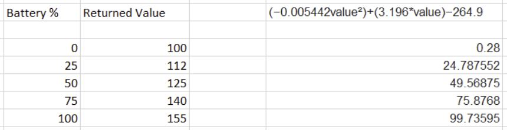
Formula's graphic with correlated points from headset's reports:
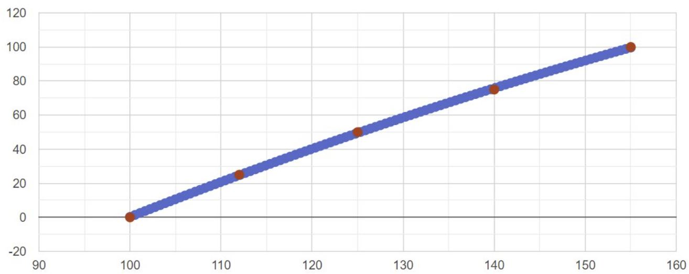
Not perfect but still good enough !
Translated to Go, taking account of the charging state variation:
func convert_battery(value float64, headset_charging bool) int {
if headset_charging != false {
value = value - 21
}
return int((-0.005442*(math.Pow(value, float64(2))) + (float64(3.196) * value) - 264.9))
}
SysTray Icon generation
Loading icon from our filesystem is one thing, dynamically generating them is another. Our workflow should look like this:
- Load a template icon, like a headset with a space in the center which would allow us to write the battery level in it
- Retrieve battery's level, convert it to % with
convert_battery() - Edit the template icon to write battery's level on it
- Send the edited icon to
SetIcon()
What are we missing ?
The part missing here is the icon edit one. Using fogleman's gg library we can create a simple function applying text over an image:
type edit_req struct {
BgImgPath string
FontPath string
FontSize float64
Text string
}
func txt_on_img(request edit_req) (image.Image, error) {
bgImage, err := gg.LoadImage(request.BgImgPath)
if err != nil {
return nil, err
}
imgWidth := bgImage.Bounds().Dx()
imgHeight := bgImage.Bounds().Dy()
dc := gg.NewContext(imgWidth, imgHeight)
dc.DrawImage(bgImage, 0, 0)
if err := dc.LoadFontFace(request.FontPath, request.FontSize); err != nil {
return nil, err
}
x := float64(imgWidth / 2)
y := float64((imgHeight / 2))
maxWidth := float64(imgWidth)
dc.SetColor(color.White)
dc.DrawStringWrapped(request.Text, x, y, 0.5, 0.5, maxWidth, 1.5, gg.AlignCenter)
return dc.Image(), nil
}
We create a struct embedding the required information about our edit:
BgImgPath: Path to the template iconFontPath: Path to font to useFontSize: Desired font sizeText: Desired text
Then we send it to our txt_on_img() function, summary of what we are doing from here:
- Load the image
- Create a new blank image with original one's bounds using
NewContext() - Draw the original image in it using
DrawImage() - Then draw over the text in its center using
DrawStringWrapped()
BackLuck Adam aka wtf is kern ?
On my way down to this I encountered a weird issue, which I didn't know about and made me though my code was wrong. Do you even font bro ? I present you a kern issue.
TLDR: In the Truetype standard, the kern table contains the values that adjust the intercharacter spacing for glyphs in a font. It can have multiple subtables that can contain information for vertical or horizontal text.
So basically, the font I was using got its kern table malformed, resulting in an error while get used by DrawStringWrapped(). Changed it with a correct one and voilà, it works !
Convert to ICO
As you can see the library need an image.Image input which is not what the systray expect as valid icon. What does it expect then ? A byte array of a decoded ICO file.
To make this easier we will do it like this:
- Instead of loading an ICO file, we will load a PNG one, which will made the road from FS to edited image flawless.
- Then we will convert it to ICO before feeding it to SetIcon().
To appreciate more this step it's recommended to know stuffs about how ICO files struct looks like.
Following this explanation we should create icondir and icondirentry structs:
type icondir struct {
reserved uint16
imageType uint16
numImages uint16
}
type icondirentry struct {
imageWidth uint8
imageHeight uint8
numColors uint8
reserved uint8
colorPlanes uint16
bitsPerPixel uint16
sizeInBytes uint32
offset uint32
}
Then we create functions which generate them and use them to convert our newly generated image to ICO, storing it in a byte array, just waiting to be send to our systray !
Which look like:
func newIcondir() icondir {
var id icondir
id.imageType = 1
id.numImages = 1
return id
}
func newIcondirentry() icondirentry {
var ide icondirentry
ide.colorPlanes = 1
ide.bitsPerPixel = 32
ide.offset = 22
return ide
}
func convert_to_ico(w io.Writer, im image.Image) error {
b := im.Bounds()
m := image.NewRGBA(b)
draw.Draw(m, b, im, b.Min, draw.Src)
id := newIcondir()
ide := newIcondirentry()
pngbb := new(bytes.Buffer)
pngwriter := bufio.NewWriter(pngbb)
png.Encode(pngwriter, m)
pngwriter.Flush()
ide.sizeInBytes = uint32(len(pngbb.Bytes()))
bounds := m.Bounds()
ide.imageWidth = uint8(bounds.Dx())
ide.imageHeight = uint8(bounds.Dy())
bb := new(bytes.Buffer)
var e error
binary.Write(bb, binary.LittleEndian, id)
binary.Write(bb, binary.LittleEndian, ide)
w.Write(bb.Bytes())
w.Write(pngbb.Bytes())
return e
}
Mix things together:
func generate_tray_level(level int) []byte {
txtimg, _ := txt_on_img(
edit_req{
BgImgPath: "assets/normal.png",
FontPath: "assets/FiraSans-SemiBold.ttf",
FontSize: 256,
Text: fmt.Sprint(level),
},
)
bufff := new(bytes.Buffer)
err := convert_to_ico(bufff, txtimg)
if err != nil {
fmt.Println("failed to create buffer", err)
}
return bufff.Bytes()
}
Now to retrieves battery level, generate an icon and put it in the systray all we need to do is:
headset_battery = convert_battery(returned_battery, headset_charging)
systray.SetIcon(generate_tray_level(headset_battery))
Final result
Mix things together with algorithms and our app is finally ready !
Last but not least, the video demo.
Get the whole source code on my github.
Next steps
As I may switch to another OS sooner or later, I should make sure the app is compatible with macOS & Linux.
As I may switch to another headset too, I should make the app use an external configuration file to make it compatible with alternatives.
Finally, I'm happy with my results, I now have a working app feeling my needs, and I learned some Go. One step further toward Terraform plugins !